Table tools for data quality
These tools evaluate the quality of your data and provide the results as metadata. This metadata is accumulated together with other metadata that has already been created, making it possible to concatenate quality nodes.
Keep in mind that TAPIS tools only allow you to calculate quality metrics that can be computed automatically. With different tools, you can calculate accuracies, validities, consistencies, omissions, among others.
Some nodes require links to additional nodes besides the one being evaluated.
 Uncertainty
Uncertainty
Setting Up the Node:

How to Use the Node:
The Uncertainty tool groups the data by date and position criteria. The resulting table is the outcome of these daggregations and includes columns with the mean and uncertainty for each variable (position, date, and result).
This is the data used in the example:
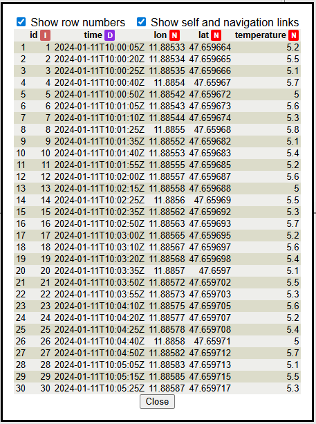
To display the dialog, double left-click on the node. This dialog has trhee parts.

Result column: Select the column that contains the results (in the example, the temperature values).
Temporal grouping: Choose the column with date values, then enter the grouping period and its time unit.
Positional grouping: Select the positional columns and assign the grouping distance in meters.
These are the results of the aggregation. In addition, there is a groupCount column indicating the number of values aggregated in each group.
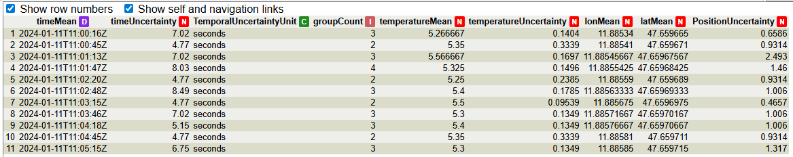
Recipes where this tool is used:
 Completness omission
Completness omission
Completeness (omission) evaluates whether a dataset contains all required values as defined by its schema or reference model. It identifies missing or undefined data elements and ensures that no mandatory information is omitted, preserving the integrity of the dataset.
Setting Up the Node:

How to Use the Node:
Completeness Omission tool allows you to calculate the rate of completeness omission in your data. You can calculate the rate for one column at a time, but you can link as many nodes as you want to carry out different omission calculations. The result obtained each time will be added to the metadata.

To display the dialog, double-click the node with the left mouse button. This node is simple: it only includes a selector for the column to evaluate and a checkbox to create a new column. The value of this new column depends on whether the evaluated column contains a value (true) or is missing (false).
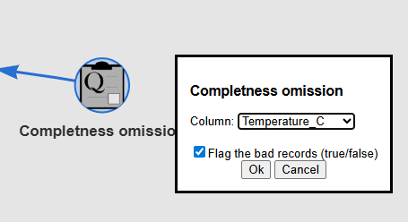
This is the result of the calculation. This dialog only appears after calculating the rate. To view the result again, click on Metadata at the top of the table below.
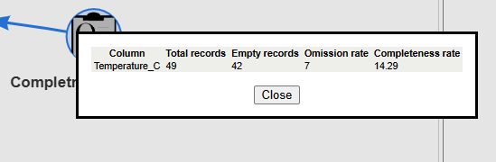
When you click on Metadata, a dialog will appear showing all the metadata calculated so far.

Here you can see the new column created, containing true or false values based on the omission calculation.

Recipes where this tool is used:
No one yet
 Logical consistency
Logical consistency
Logical consistency checks whether values in a dataset can coexist according to a reference table of valid combinations. It verifies that the relationships between variables follow predefined rules that define which values are allowed to appear together. This ensures that the data does not contain incompatible or logically contradictory combinations according to the defined reference model.
Setting Up the Node:
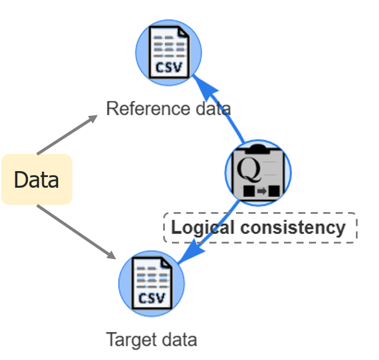
How to Use the Node:
Logical consistency tool allows you to evaluate the quality of your data, specifically its logical consistency. You can use this tool with any kind of data. In TAPIS, this analysis is performed using another table as a reference (in this example: Reference data node).
This is the data to analyze (Target data):
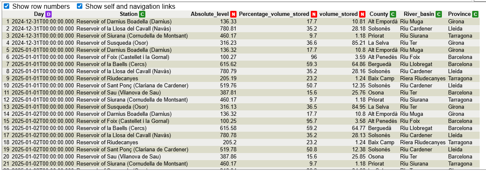
This is the data used as a reference (Reference data):

To display the dialog, double left-click on the node. This dialog contains a table with two columns. Each column displays the information from one of the nodes connected. The left column shows the information from the first node connected to this tool, which should be the data to assess. The right column shows the reference data (the second connected node).
Use two or more selectors in each column to indicate which values you want to evaluate. Column 1 corresponds to Column 1, and so on. You can select only one column, but this will not perform a logical consistency evaluation. If you want to check whether values in a single column are correct, you should perform a Thematic quality evaluation (Thematic validity).
The image below shows the selected values for this example.
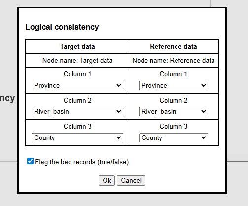
This is the result of the calculation. This dialog only appears after calculating the rate. To view the result again, click on Metadata at the top of the table below.

When you click on Metadata, a dialog will appear showing all the metadata calculated so far.
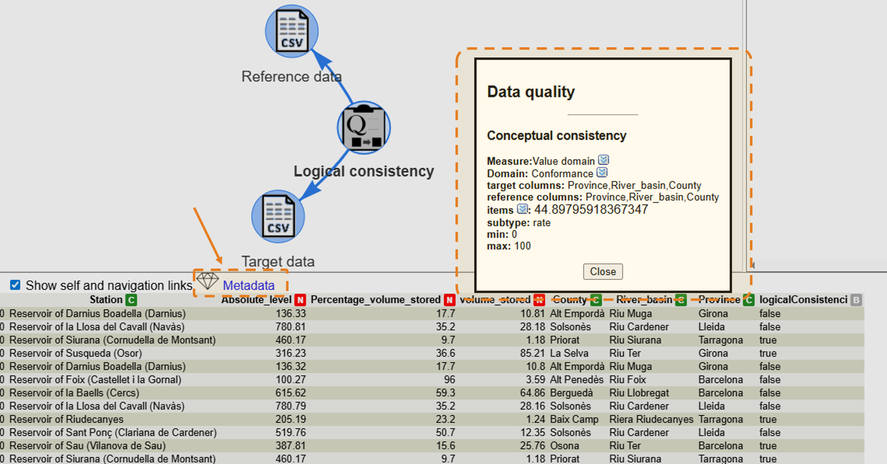
Here you can see the new column created, containing true or false values based on the logical consistency calculation.
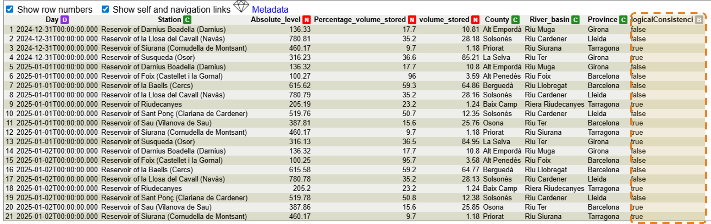
Recipes where this tool is used:
No one yet
 Temporal quality
Temporal quality
Temporal quality evaluates the correctness and reliability of time-related information in a dataset. It ensures that temporal values are accurate, valid, and consistent according to defined rules, such as reference values, valid time ranges, expected resolution, and measurement frequency.
Temporal accuracy:Temporal accuracy is a quantitative indicator of the correctness of time-related data. It is calculated from the dataset, either by averaging an uncertainty column or by computing the standard deviation of time values.
Temporal validity: Temporal validity assesses whether time values conform to a predefined validity range, ensuring that all timestamps fall within acceptable limits.
Temporal resolution: Temporal resolution is a quantitative indicator that measures the proportion of records that satisfy a predefined temporal granularity (e.g., hours, minutes), according to the required resolution of the dataset.
Temporal consistency: Temporal consistency evaluates whether data follows an expected time pattern or frequency. It checks if the time intervals between records match the defined pattern (e.g., hourly), allowing for a small tolerance.
Setting Up the Node:

How to Use the Node:
Temporal quality allows you to evaluate the quality of your data, specifically different types of temporal quality (accuracy, validity, resolution, and consistency). It is possible to evaluate one or more types at the same time by checking the checkbox for each one. This tool can be used with any kind of node that contains date-type data.
To display the dialog, double left-click on the node. This is the general appearance of the dialog; each part will be explained below. Different datasets will be used in the examples.
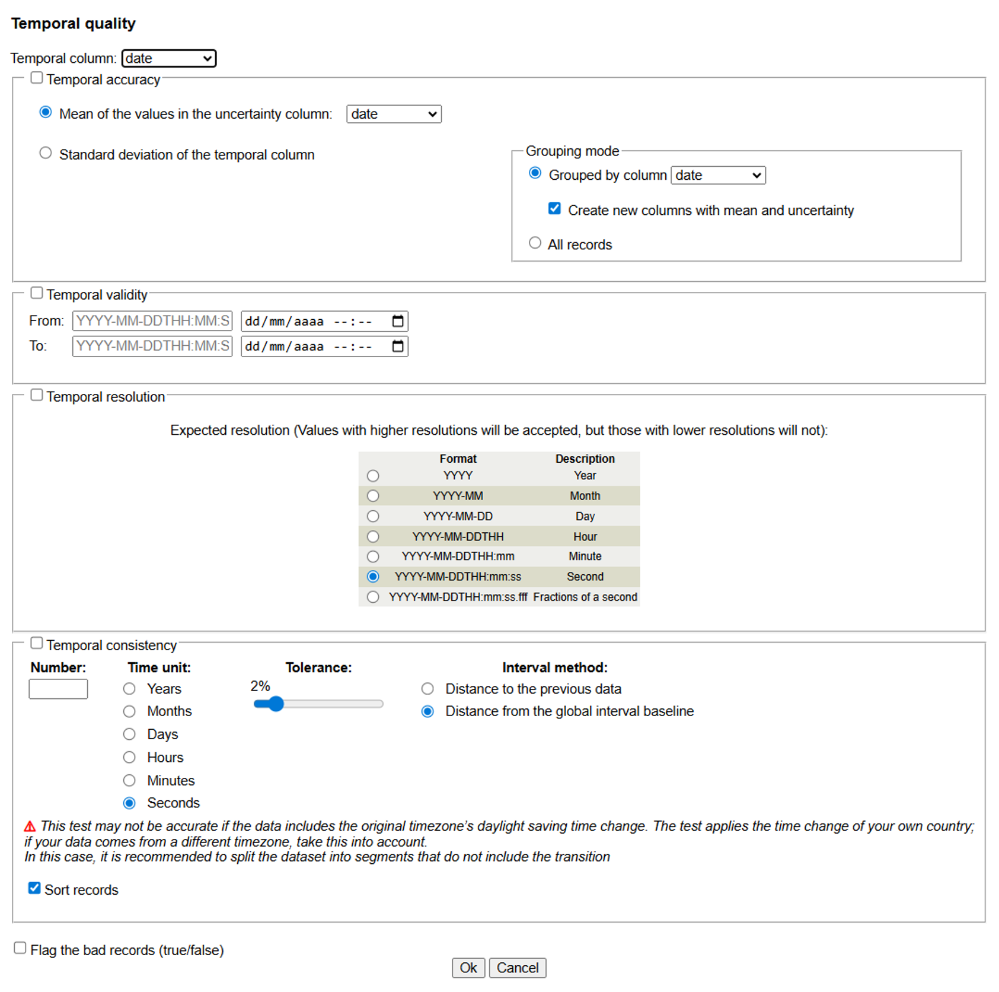
The temporal column at the top is used to indicate which column will be assessed. This selector is always used, except when calculating temporal accuracy by computing the mean of the values in a specific column that contains uncertainties in the dates. In this case, the selected column does not matter, as it will not be used.
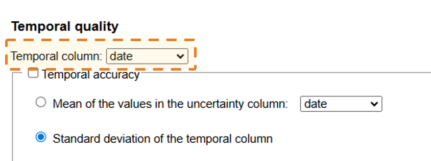
Check the checkbox Flag tue bad records at the bottom of the dialog to create a new column with true or false values for your calculated rates (valid for all temporal options except temporal accuracy, since it is a calculation).

Temporal accuracy:
This is the date used to calculate it.

There are two ways to calculate it:
Mean of the values in the uncertainty column: If you already have a column with calculated uncertainties, select it using the selector. The program will calculate the mean of this column.
Standard deviation of the temporal column: This method uses the column selected as the temporal column. It provides a single value for all the data, but it is also possible to calculate the standard deviation by grouping values (grouped by another column) using a different column as a guide (selected with the selector). If you select group mode, you can add a new column to your data with the uncertainties for each group by checking the Create new column with mean uncertainty option.
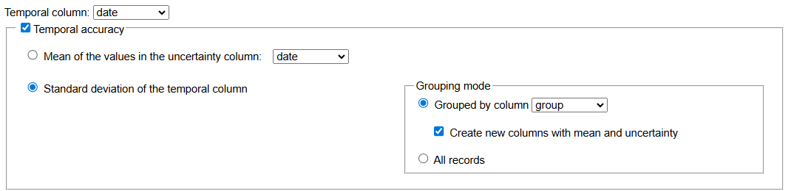
This is the result of the calculation. This dialog only appears after calculating the rate. To view the result again, click on Metadata at the top of the table below.
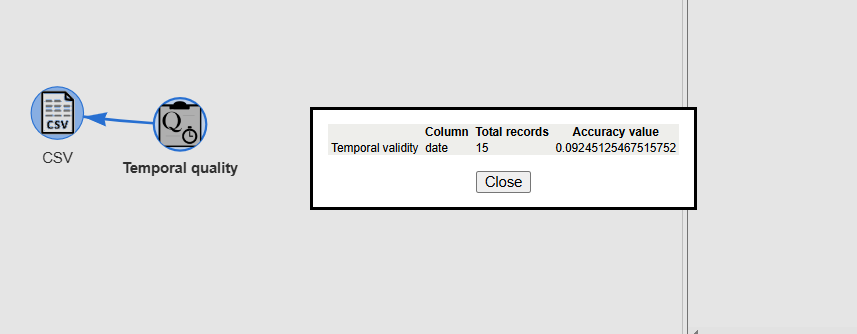
When you click on Metadata, a dialog will appear showing all the metadata calculated so far.
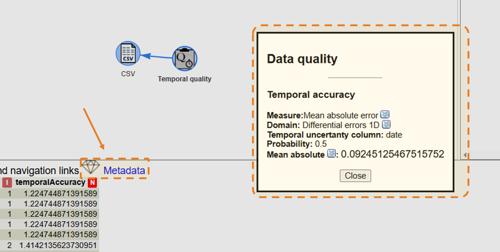
Here you can see the new column created using grouping mode, containing uncertainty values.
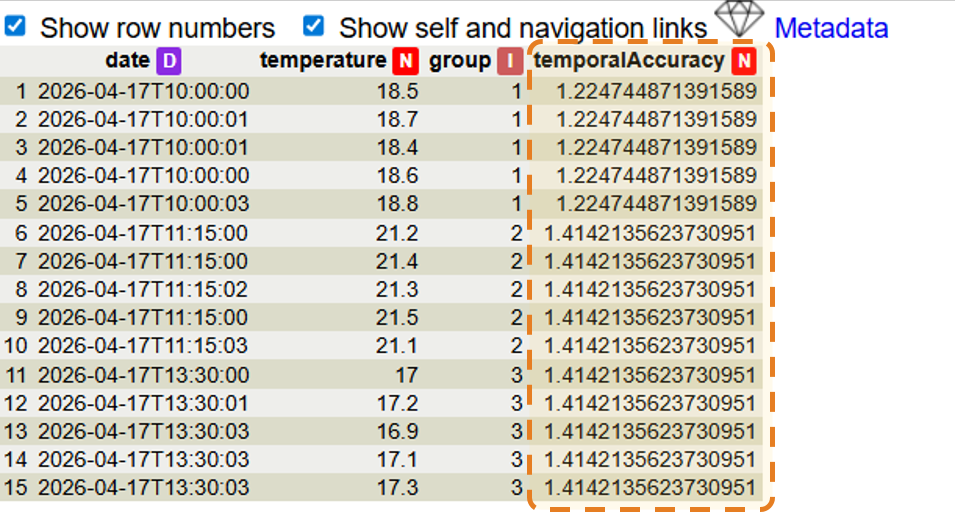
Temporal validity:
This is the date used to calculate it.

Enter the from and to dates. You can write them directly in ISO format or use the calendar. To use the calendar, click the calendar icon; it will open, then select a date and click outside the calendar to close it. The date will be filled in automatically.

This is the result of the calculation. This dialog only appears after calculating the rate. To view the result again, click on Metadata at the top of the table below.
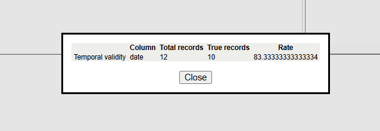
When you click on Metadata, a dialog will appear showing all the metadata calculated so far.

Here you can see the new column created, containing true or false values based on the temporal validation calculation.
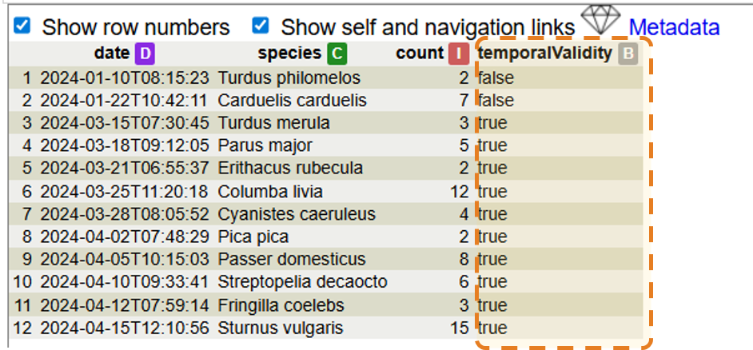
Temporal resolution:
This is the date used to calculate it.
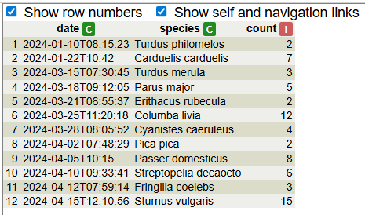
Choose the option to test your values. The selected option will be the minimum level that is considered valid. For example, if you select hours, dates with hours will be valid, as well as dates with minutes, seconds, and fractions of a second. Dates with only days, months, or years will be considered invalid. In the example, most dates have second precision, which will be valid, but some dates have only hour precision, which will be considered invalid.
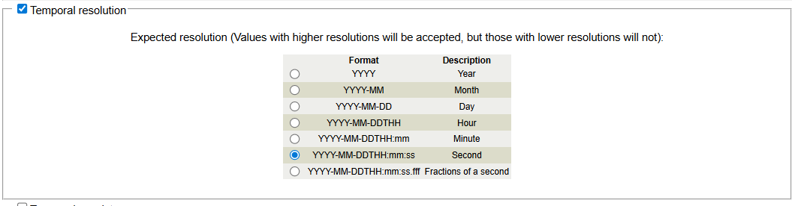
This is the result of the calculation. This dialog only appears after calculating the rate. To view the result again, click on Metadata at the top of the table below.
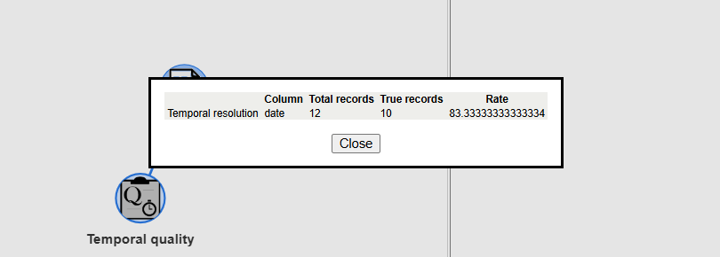
When you click on Metadata, a dialog will appear showing all the metadata calculated so far.

Here you can see the new column created, containing true or false values based on the temporal resolution.
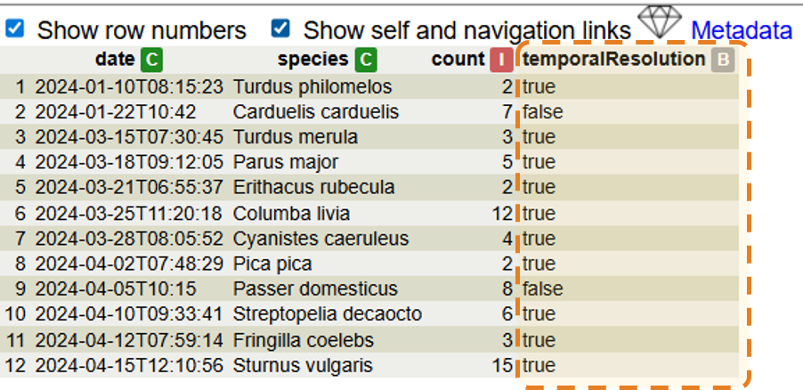
Temporal consistency:
This is the date used to calculate it.
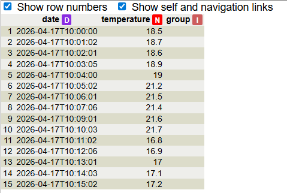
This tool automatically calculates the time intervals based on the specified parameters, starting from the first value. There are two ways to apply it. Below are two examples to help you understand how each method works.
Distance to the previous data: This method starts from the first date and calculates the expected range in which the next date should fall. If the date fits within this range, it is considered valid; otherwise, it is considered invalid. Each calculation is based on the previous date. This allows you to continue validating subsequent dates even if there is a gap in the data.
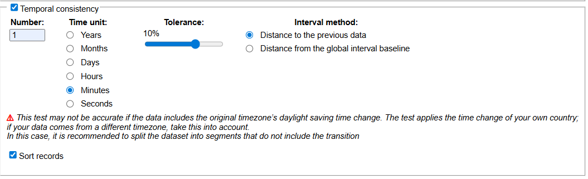
This is the result of the calculation. This dialog only appears after calculating the rate. To view the result again, click on Metadata at the top of the table below.

When you click on Metadata, a dialog will appear showing all the metadata calculated so far.
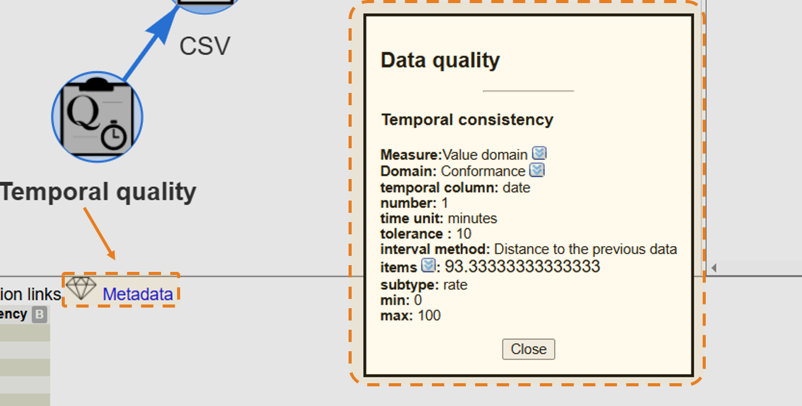
Here you can see the new column created, containing true or false values based on the temporal consistency calculation. As you can see, there is only one invalid value, only the one immediatly after the gap.

Distance from the global interval baseline: This method builds an ideal time sequence starting from the first date and checks whether each date matches this expected pattern. This method is useful when gaps in the data are not allowed.

This is the result of the calculation. This dialog only appears after calculating the rate. To view the result again, click on Metadata at the top of the table below (not showed in this example).

Here you can see the new column that has been created, containing true or false values based on the temporal consistency calculation. As you can see, all values after the gap are invalid.

Recipes where this tool is used:
 Positional quality
Positional quality
Setting Up the Node:
How to Use the Node:
Recipes where this tool is used:
 Thematic quality
Thematic quality
Setting Up the Node:
How to Use the Node:
Recipes where this tool is used: